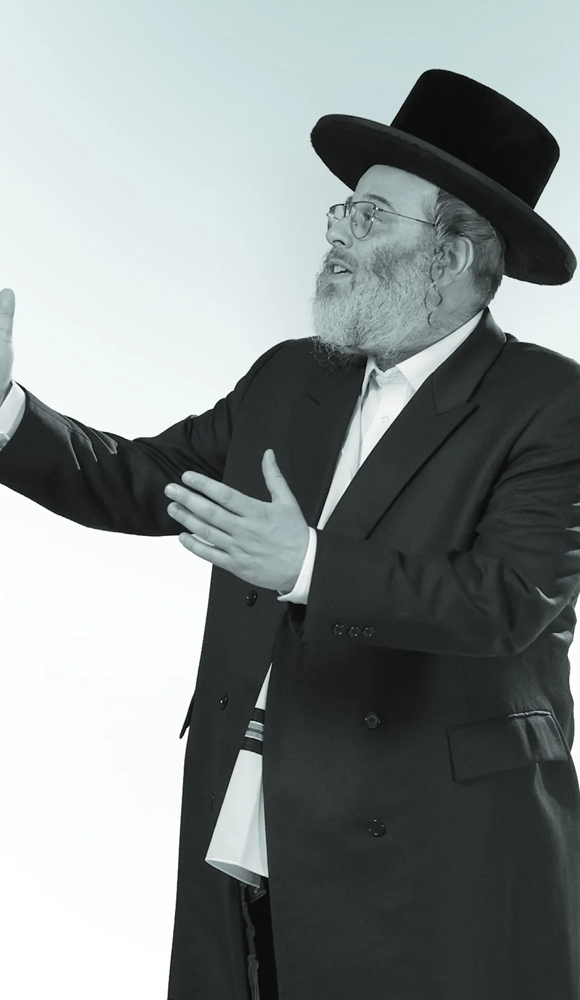

עשייה מוזיקלית
העשייה המוזיקלית של קאליש נפרשת על פני מגוון רחב של תחומים, החל מיצירה והלחנה, דרך עיבודים קוליים ותזמורתיים מורכבים במוזיקה קלאסית ובכתיבת סימפוניות, ועד להפקות מוזיקליות רחבות היקף.
דודי קאליש הוא מהקולות ומהכוחות המוזיקליים הייחודיים בעולם המוזיקה החסידית.
זמר, מלחין, מעבד, מתזמר, מנצח ומפיק מוזיקלי, אשר לאורך שנות פעילותו יצר שפה מוזיקלית בעלת אופי וזהות משלה.
יליד בני ברק (תשל"ח), בן למשפחת מוזיקאים מחסידות בעלז. אחרי לימודי מוזיקה בניו יורק חזר לארץ והחל לכתוב ולעבד מוזיקה ווקאלית חסידית.

העשייה המוזיקלית של קאליש נפרשת על פני מגוון רחב של תחומים, החל מיצירה והלחנה, דרך עיבודים קוליים ותזמורתיים מורכבים במוזיקה קלאסית ובכתיבת סימפוניות, ועד להפקות מוזיקליות רחבות היקף.
אחד מסימני ההיכר הבולטים ביצירתו הוא החיבור העמוק למוזיקה החסידית השורשית. ניגוני החצרות, מסורת בתי החסידים, עולם המקהלות וההרמוניות הקוליות מהווים חלק בלתי נפרד מעולמו המוזיקלי.
לצד השורשיות והנאמנות למסורת, קאליש מביא עמו תפיסה מוזיקלית רחבה, תעוזה יצירתית ויכולת לשלב בין צלילים, סגנונות וכלים לכדי יצירה עשירה ומלאת חיים.
לאורך שלושה עשורים חתום דודי על עשרות אלבומים, כמעבד, כמפיק וכזמר: הפקות ווקאליות, אלבומים חסידיים, יצירות מקוריות ושיתופי פעולה עם זמרים, מקהלות ותזמורות.
שירים שהפכו לנכסי צאן ברזל.
האלבום "קול דודי" מרכז את הקול הזה לארבע-עשרה רצועות של לחנים, עיבודים ושירה, והאתר הזה מרכז את כל המוזיקה שלו: קליפים, לייבים, הופעות ודרך ישירה להזמנת אירועים.